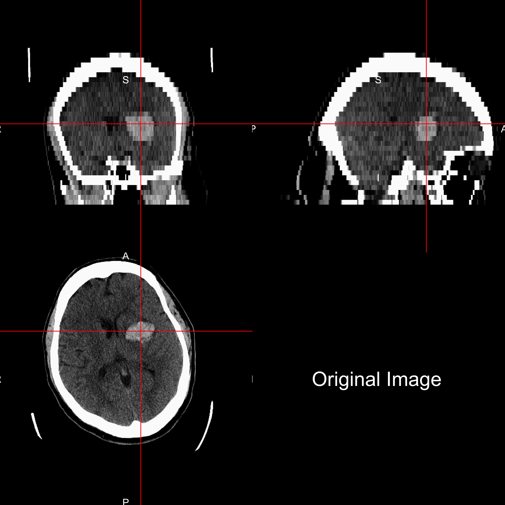

- Minimally Invasive Surgery plus r-tPA for Intracerebral Hemorrhage Evacuation (MISTIE)
- Multi-center, multi-national Phase II clinical trial
- Patients with intracerebral hemorrhages (≥ 20 millilters)

February 24, 2016


http://www.heartandstroke.com/site/c.ikIQLcMWJtE/b.3484153/k.7675/Stroke__Hemorrhagic_stroke.htm

Want to go from a brain image: 
To a binary hemorrhage mask: 
| Overall | |
|---|---|
| Age in Years: Mean (SD) | 60.8 (11.2) |
| Male: N (%) | 76 (68.5%) |
| Clot Location RC (%) | |
| Putamen | 68 (61.3) |
| Lobar | 33 (29.7) |
| Globus Pallidus | 6 ( 5.4) |
| Thalamus | 4 ( 3.6) |
| Diagnostic ICH Volume in mL: Mean (SD) | 37.4 (20.1) |


Muschelli, John, Elizabeth Sweeney, and Ciprian Crainiceanu. "brainR: Interactive 3 and 4D Images of High Resolution Neuroimage Data." R JOURNAL 6.1 (2014): 42-48.


Training Data Structure
Let \(Y_{i}(v)\) be the presence / absence of ICH for voxel \(v\) from person \(i\).
\[ \text{logit}\left(P(Y_{i}(v) = 1)\right) = \beta_0 + \sum_{k= 1}^{p} x_{i, k}(v)\beta_{k} \] where \(x_{i, 1}(v) \dots x_{i, 21}(v)\) are the predictors.


For each voxel, neighborhood \(N(v)\), of all adjacent neighboring voxels in \(3\) dimensions. Let \(x_k(v)\) denote the voxel intensity in HU for voxel neighbor \(k\), where \(k = 1, \dots, 27\). \[
\begin{equation}
\bar{x}(v) = \frac{1}{N(v)} \sum_{k \in N(v)} x_k(v) \label{eq:mean}
\end{equation}
\] 

From \(32\) CT images from Dr. Rorden (personal communication), we created a voxel-wise mean image \(M\) and voxel-wise standard deviation \(S\) image, after registering to a CT template (Rorden, et al., 2012).

\[ z_{i,\text{template}}(v) = \frac{x_{i}(v) - M(v)}{S(v)} \]